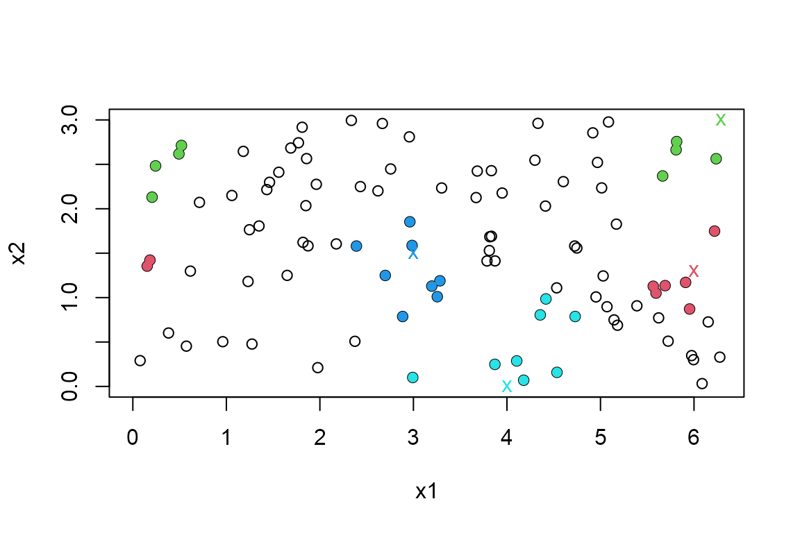
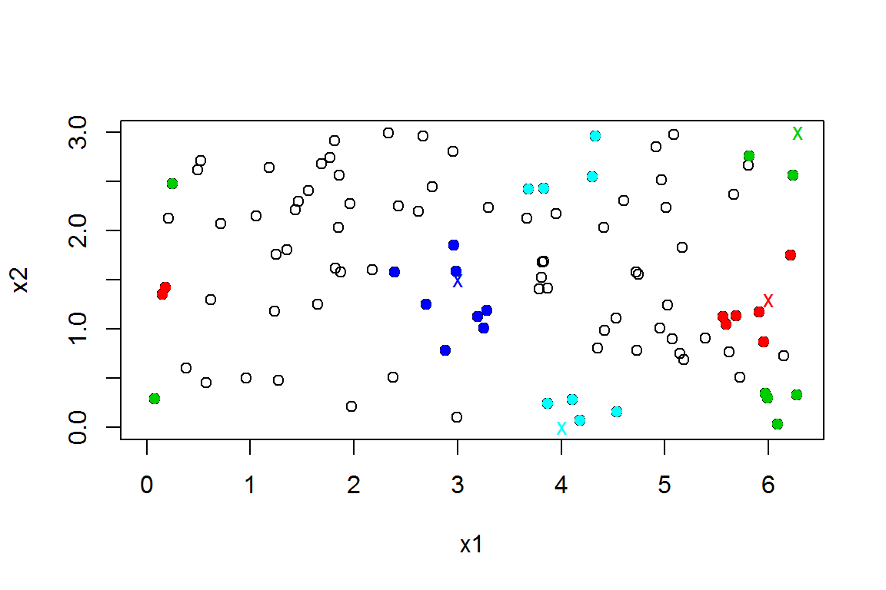
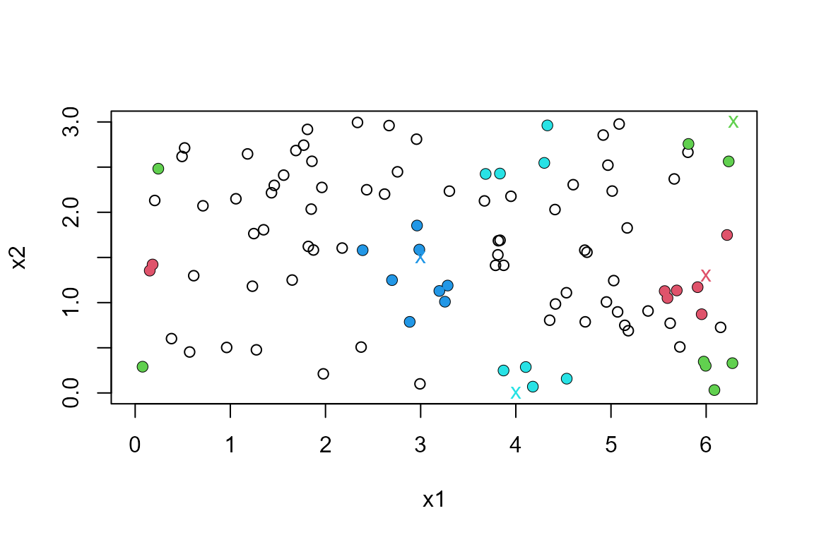

vignettes/donut-vignette.Rmd
donut-vignette.RmdA non-parametric method for classification or regression involves making inferences locally using the \(k\) observations closest to a point of interest, based on some metric, such as L2 or L1. There are several R packages, such as RANN (Arya et al. 2019) and nabor (Elseberg et al. 2012), that find \(k\) nearest neighbours. The donut package considers the situation where one or more of the variables in the dataset is periodic on a finite interval. For example, direction is periodic on the interval \((0, 360)\) degrees. In the small dataset \(\{10, 90, 350\}\) degrees 350 is closer to 10 than is 90: 10 and 350 are separated by 20 degrees, 10 and 90 by 80 degrees.
The function nnt() finds the \(k\) nearest neighbours of each of a set of
points of interest, wrapping periodic variables on a torus so that this
periodicity is reflected. The user chooses the function to use to find
the nearest neighbours. The nearest neighbour functions from the
aforementioned packages are used as examples.
We use a simple 2-dimensional example from the
RANN::nn2() documentation. For the purposes of illustrating
nnt() we will suppose that one of more of the variables in
periodic. In one or two dimensions the plot method associated with
nnt() can be used to show the effect of taking this
periodicity into account.
library(donut)
set.seed(20092019)
x1 <- runif(100, 0, 2 * pi)
x2 <- runif(100, 0, 3)
DATA <- data.frame(x1, x2)First, we suppose that only x1 should be wrapped, on the
range \((0, 2\pi)\). We use a small
number of query points of interest, chosen to illustrate the wrapping.
By default RANN::nn2(), which uses the L2 metric, is used
to find the nearest neighbours. In the plot, query points are indicated
with colour-coded crosses and the 8 nearest neighbours of each point are
shaded in the same colour. The wrapping of the variable x1
is apparent.
library(RANN)
#> Warning: package 'RANN' was built under R version 4.2.3
ranges1 <- c(0, 2 * pi)
query1 <- rbind(c(6, 1.3), c(2 * pi, 3), c(3, 1.5), c(4, 0))
res1 <- nnt(DATA, query1, k = 8, torus = 1, ranges = ranges1)
plot(res1, ylim = c(0, 3))
The object returned from nnt() is a list including the
same components that are returned from RANN::nn2() and
nabor::knn(), that is, matrices containing the nearest
neighbour distances (nn.dists) and the corresponding
indices in data (nn.idx). The \(i\)th row relates to the \(i\)th query point, the \(i\)th row of query.
res1$nn.dists
#> [,1] [,2] [,3] [,4] [,5] [,6] [,7]
#> [1,] 0.15704522 0.3501943 0.4310847 0.4397544 0.4685137 0.4767617 0.4819253
#> [2,] 0.43932258 0.5283214 0.5716203 0.5815153 0.5939273 0.6234609 0.8834840
#> [3,] 0.08775281 0.3553781 0.3918241 0.4196264 0.4209570 0.5525234 0.6148038
#> [4,] 0.19200301 0.2799162 0.3053224 0.5576230 0.8803338 1.0122411 1.0694339
#> [,8]
#> [1,] 0.4993756
#> [2,] 0.8933141
#> [3,] 0.7221735
#> [4,] 1.0731836
res1$nn.idx
#> [,1] [,2] [,3] [,4] [,5] [,6] [,7] [,8]
#> [1,] 54 18 8 27 19 30 31 28
#> [2,] 63 82 74 58 81 45 42 88
#> [3,] 25 37 6 41 89 7 80 33
#> [4,] 93 87 52 12 29 85 1 40Now we suppose that both variables should be wrapped, on the ranges \((0, 2\pi)\) and \((0, 3)\) respectively. The points shaded in green illustrate the effect of wrapping in both variables.
ranges <- rbind(c(0, 2 * pi), c(0, 3))
query <- rbind(c(6, 1.3), c(2 * pi, 3), c(3, 1.5), c(4, 0))
res2 <- nnt(DATA, query, k = 8, torus = 1:2, ranges = ranges)
plot(res2)
The argument fn can be used to choose the function that
finds nearest neighbour distances. For example, we could choose
nabor::knn(). Any function can be used provided that it has
syntax consistent with a call
fn(data = data, query = query, k = k, ...). The following
code produce the same output as fn = RANN::nn2.
library(nabor)
#> Warning: package 'nabor' was built under R version 4.2.3
ranges <- rbind(c(0, 2 * pi), c(0, 3))
query <- rbind(c(6, 1.3), c(2 * pi, 3), c(3, 1.5), c(4, 0))
res2 <- nnt(DATA, query, k = 8, fn = nabor::knn, torus = 1:2, ranges = ranges)
plot(res2)